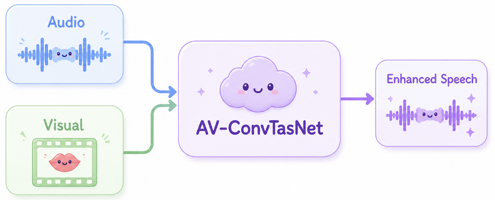

Registration is now open! The dataset link will be sent to your
registered email shortly. If you do not receive it, please contact
us immediately via email or WeChat.
The Real-World AVSE Challenge has been accepted by ISCSLP 2026.
Introduction
The Real-World AVSE Challenge focuses on Audio-Visual
Speech Enhancement (AVSE) under genuinely real-world conditions. Unlike
conventional benchmarks built on the "clean video plus synthetic speech"
paradigm, it emphasizes naturally occurring speech overlap, authentic
reverberation, and ambient noise, while also confronting the visual
degradations common in practice: occlusion, low quality, missing
frames, blur and far-field. Through two complementary tracks on real-world mixed
scenarios and visual degradation, the Challenge aims to move AVSE from
the "ideal video" setting toward real-world deployment.
This track provides multi-speaker audio-visual data captured naturally in
real environments, with speech mixed organically rather than synthetically.
It offers a comprehensive test of model robustness and practicality in
realistic settings, aiming to bridge the gap between simulation and reality.
Track 2 — Visual Degradation
Built on relevant public datasets, this track constructs a set of visually
degraded samples, covering occlusion, low quality, missing frames, and blur,
to systematically assess how well models hold up when the visual modality
becomes unreliable.
Data
The Real-World AVSE Challenge provides an official
development set and testing set for each track. The provided data falls
into two cases: single-speaker speech and two-speaker simultaneous
speech, and all audio files are naturally recorded. The recordings
involve seven groups of distinct speakers (two per group, with no gender
restriction). For both Track 1 and Track 2, the speakers in the
development and test sets are completely non-overlapping. We place no
restrictions on the training data.
Training Set
This Challenge does not specify any official training set.
Participants are free to use any open-source datasets, as well as
any pre-trained models and data augmentation methods. (Regardless of
which datasets, models, or methods are used, participants must
clearly describe them in the final paper submission.)
Development Set
Track 1
The speech falls into two types. One is mix, which
comes from naturally recorded real-world mixtures; it has no
clean reference, so only non-intrusive (reference-free) metrics
are provided. The other is remix, formed by summing two clean
single-speaker segments, which supports both reference-based and
reference-free metrics. (Both mix and remix contribute to the
final evaluation. remix plays a key role, since its ground truth
makes reference-based metrics possible.) The dev set is drawn
from three of the seven speaker groups.
Track 2
The development set reuses the Track 1 development data, likewise
divided into mix and remix, with visual degradations applied to
the target speakers' face videos. There are five types of visual
degradation: low quality, occlusion, frame freezing,
desynchronization, and blackout. It also includes the original
3-meter far-field visual material from the data. The data comes
from three of the seven speaker groups.
Testing Set
Track 1
The testing set follows the same mixing scheme as the
development set, with data drawn from the remaining four unseen
speaker groups, ensuring no overlap between the development and
testing sets.
Track 2
The testing set likewise reuses the Track 1 testing data, with
visual degradations applied to the target speakers' face videos.
The data again comes from the remaining four unseen speaker
groups, ensuring no overlap between the development and testing
sets.
The baseline system is AV-ConvTasNet, a two-stream
audio-visual separator that recovers a single target speaker from a
mixture, conditioned on that speaker's lip movements. The audio branch
is a Conv-TasNet separator operating on the raw waveform, while the video
branch is a frozen ResNet-34 lip-reading encoder (a 3D convolutional
stem followed by ResNet-34). These visual features are temporally
aligned to the audio bottleneck and fused with the audio representation,
allowing the model to use the target speaker's lip video to guide
separation. Given a mixture waveform and the corresponding lip frames,
the model directly outputs the enhanced target speech.

Baseline model architecture.
Evaluation
Details about the evaluation metrics, ranking criteria, and submission
procedure will be released here. Stay tuned.
Organizers
Kai LiTsinghua University
Wenze RenNational Taiwan University
Junjie LiThe Hong Kong Polytechnic University
Cheng YuOhio State University
Peijun YangWuhan University
Haibin WuMeta
Szu-Wei FuNvidia
Wen-Chin HuangNagoya University
Hsin-Min WangAcademia Sinica
Xiaolin HuTsinghua University
Ming LiThe Chinese University of Hong Kong, Shenzhen
DeLiang WangThe Chinese University of Hong Kong, Shenzhen
Yu TsaoAcademia Sinica
Contact
If you have any questions, feel free to contact us at: